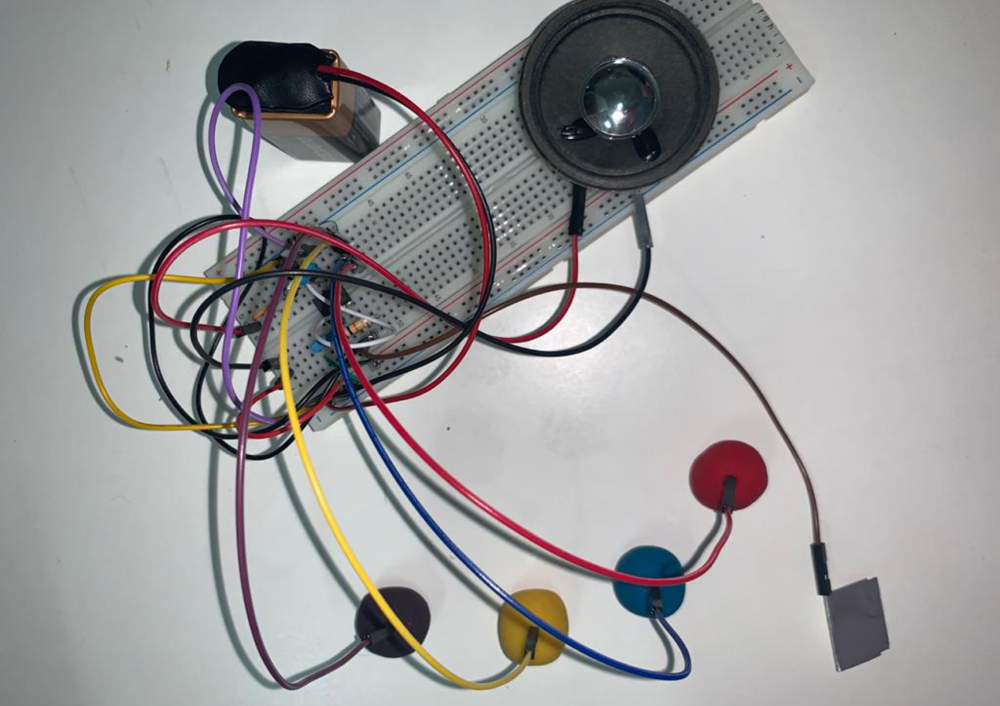

Para hacer este drawdio, lo único que cambié de lo que decía el esquemático fue poner el cable del aluminio a una patita de la fotorresistencia y el cable del grafito a la otra patita de la fotorresistencia.
Para este drawdio seguí el esquemático al pie de la letra.
Para este drawdio, lo único que cambié fue el cable al grafito, y en la misma fila conectada al pin 2 le agregué más jumpers para conectarlos a la plasticina conductiva, de esta forma, al tocar el aluminio con una mano y presionar las plasticinas con la otra se producía el sonido.

En este video se muestra una recopilación de los esquemáticos anteriores.